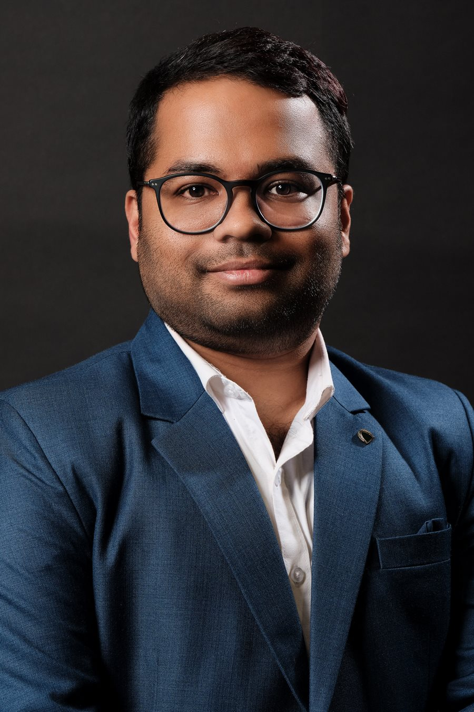
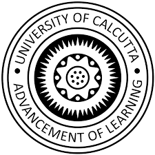
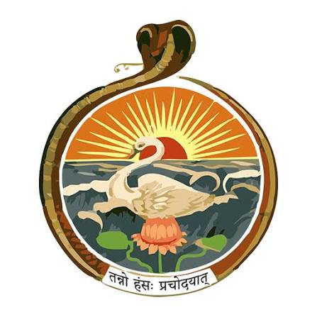
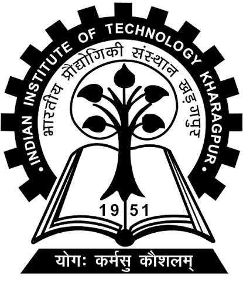

Postdoctoral Fellow · University of Toronto
Computational and experimental chemist working on electrocatalysis and the electrified interface. Department of Materials Science & Engineering, University of Toronto, with Prof. Chandra Veer Singh.
Selectivity at an electrified interface is not a property of the catalyst alone — it is the coupled state of four variables: the coordination environment of the active metal centre, the local electric field, the solvation and ion structure of the double layer, and interfacial mass transport.

Citation metrics from Google Scholar, August 2026 · 3 of the 21 articles are invited reviews

University of CalcuttaPh.D. · 2020–25
RKM VidyamandiraDoctoral research
IIT KharagpurM.Tech. · 2017–19Invited review on emerging 2D materials for green ammonia electrosynthesis published in ChemSusChem.
Work on local-field-assisted nitrate reduction using Ni(TCNQ)2 nanostructures published in Advanced Functional Materials.
Joined the University of Toronto as a Postdoctoral Fellow in Materials Science & Engineering with Prof. Chandra Veer Singh.
Attended SCGCh / CSChE 2025 in Montréal, 5–7 October — “Chemical engineering in an AI world: a pioneer of sustainability”.
Morphology-dependent N2 reduction on Cu2O published in Small.
Named a finalist for the Best Paper Award in Carbon Capture and Utilization at the international conference held at JNCASR.
Selective nitrogen oxidation to nitric acid published in Advanced Functional Materials.
Ammonia, urea and nitric acid underpin the global nitrogen economy, yet their manufacture consumes roughly 2% of world energy and emits over 1% of anthropogenic CO2.
Replacing that high-temperature chemistry with ambient, renewable-electricity-driven synthesis is limited not by thermodynamics but by selectivity: the desired N–H, C–N and N–O bond-forming steps must outcompete a kinetically trivial hydrogen evolution reaction.
My programme makes each of the four governing variables independently computable, independently measurable, and therefore independently designable — connecting density functional theory, molecular dynamics, machine-learned interatomic potentials and multiphysics modelling with catalyst synthesis and electrochemical measurement.
Metal phthalocyanines gave a chemically exact platform: a single M–N4 centre whose ligand field and electronic structure can be tuned deliberately. A scalable route to hollow cobalt phthalocyanine nanotubes reduces N2 to NH3 at room temperature; 1D/2D coupling with carbon nitride then redirects selectivity across both NO3− and N2 reduction.
Electrochemical urea synthesis is the hardest selectivity problem in this space — simultaneous activation of two feedstocks, a C–N bond formed between short-lived intermediates, and suppression of three competing pathways. Dual-metal-site-mediated coupling was demonstrated and the site-selective co-reduction mechanism resolved on copper phthalocyanine nanotubes.
Selective N2 oxidation to nitric acid was established by synergising cobalt phthalocyanine with a carbon nitride surface — a rare demonstration that one molecular platform can be driven oxidatively. Two later studies made the local electric field an explicit, quantitative design variable, reconciling COMSOL field maps, DFT energetics and electrochemical measurement on the same geometry.
Current postdoctoral work builds connected DFT → MLIP molecular dynamics → continuum multiphysics → uncertainty-aware Bayesian optimisation workflows for symmetry-broken 2D semiconductors, where an intrinsic out-of-plane dipole governs charge separation, defect behaviour and interfacial reactivity.
Each layer answers a distinct chemical question and passes a physically meaningful quantity to the next. Experiment is not a final validation step but a continuous source of retraining data. Select a layer to see what it settles.
HypothesisC–N coupling and multi-electron N-reduction require two chemically distinct, spatially adjacent sites whose binding energies are anti-correlated — a condition conventional scaling relations forbid on a single-metal surface.
Heteronuclear and axially-modified M–N4/M–Nx macrocycles anchored on 2D supports, dual-site alloys and high-entropy surfaces, and defect-engineered heterostructures. Periodic DFT/DFT+U with explicit solvation and constant-potential corrections resolves reaction networks, potential-determining steps, dissolution and segregation risk, and HER competition together — not as a ranking, but to extract interpretable descriptors a synthetic chemist can act on.
HypothesisThe largest unexploited selectivity lever is not the catalyst but the electrolyte.
Static adsorption energies cannot describe an interface in motion. This thrust follows solvent, cations, anions and intermediates directly using classical and ab initio molecular dynamics, with MLIPs extending quantum-mechanical fidelity to the length and time scales the double layer actually requires — quantifying how cation identity and hydration, interfacial water orientation, local pH and hydrogen-bond networks set intermediate lifetimes and suppress HER.
HypothesisIf an external field improves selectivity, a field built into the lattice should do so permanently.
Janus and otherwise asymmetric 2D chalcogenides, polar heterostructures and molecularly-functionalised 2D supports carry an intrinsic out-of-plane dipole that pre-polarises the interface, drives directional charge separation, and shifts adsorbate binding without additional overpotential. This unites both research lines — testing whether internal fields achieve what nanostructure geometry achieved externally in the Cu2O and Ni(TCNQ)2 work.
Nitrogen electrocatalysis has a documented false-positive problem. Standard practice in my work: quantitative 15N isotope labelling with NMR/MS confirmation, feed-gas purification, open-circuit and Ar-purged blanks, independent dual quantification by colorimetry and ion chromatography, and full reporting of yield-rate normalisation. Computationally: documented convergence, explicit uncertainty, version-controlled workflows and published input structures.
Reverse chronological. Name in bold; first-author and invited-review articles are marked. Filter by role or by chemistry.
Process for the electrochemical synthesis of green urea
Application 17/846,753 · co-inventorProcess for the electrochemical synthesis of ammonia
Application filed 2021Electrochemical synthesis of ammonia
202131029798Electrochemical synthesis of green urea
202131027290Electrochemical synthesis of nitric acid
202131029797University of Toronto · Materials Science & Engineering · Advisor: Prof. Chandra Veer Singh
Multiscale and machine-learning-driven modelling of two-dimensional semiconductors: high-throughput DFT, machine-learned interatomic potentials, COMSOL multiphysics, and uncertainty-aware multi-objective Bayesian optimisation.
University of Alberta · Chemical & Materials Engineering · Advisor: Prof. Samir H. Mushrif
SERB (Government of India) fellowship. Density functional theory and molecular dynamics of catalytic interfaces.
University of Calcutta, at Ramakrishna Mission Vidyamandira · Advisor: Dr. Uttam Kumar Ghorai
Thesis: Electrochemical fixation of N2 and CO2 using cobalt phthalocyanine based catalysts. Electrocatalyst synthesis, electrochemical nitrogen and carbon fixation, and combined experimental–computational mechanistic study.
Indian Institute of Technology Kharagpur · Advisor: Prof. Anil K. Bhowmick
Thesis: Evaluation of graphene as a multifunctional nanofiller in rubber compounds. Research with Birla Carbon on dispersion optimisation and tire-performance analysis.
University of Calcutta · Ramakrishna Mission Vidyamandira
Thesis: Development of copper phthalocyanine nanostructures by thermal evaporation — XPS, SEM, TEM, photoluminescence and cathodoluminescence.
University of Calcutta · Ramakrishna Mission Vidyamandira
Undergraduate research at Saha Institute of Nuclear Physics on bovine serum albumin interactions with gold nanoparticles; Indian Academy of Sciences Summer Research Fellow at INST Mohali (2016) on silicon quantum dots.
Carbon Capture and Utilization · International Conference, JNCASR
Patent development and commercial application · Ramakrishna Mission Vidyamandira
SERB, Government of India · competitive national fellowship
Sustainable Functional Materials and Processes · IIT Kharagpur
ACS Sustainable Chemistry & Engineering · watch the feature
Chemical Science Symposium · Royal Society of Chemistry
Indian Chemical Society
UGC Postgraduate Merit Scholarship · second rank in University, Chemical Sciences
The most durable learning occurs when an equation stops being a symbol and becomes an explanation.
I structure teaching around a recurring cycle: predict, calculate, test, interpret. Students first articulate what should happen, then build a quantitative model, compare the model with evidence, and finally decide whether the result is physically credible.
As a teaching assistant in general chemistry laboratories, I learned that students often perform a procedure successfully without understanding why each step matters. I began using short pre-laboratory questions, live conceptual checks, and post-experiment interpretation to make the reasoning visible.
A typical class begins with a physical question rather than a finished derivation. Worked examples move from idealised systems to authentic research problems — electrochemical nitrogen reduction, carbon dioxide conversion, batteries, catalytic interfaces. In advanced courses, students reproduce a published result, challenge an assumption, quantify uncertainty, and propose a defensible extension.
Mentored to date: three undergraduate, two master’s and one international exchange researcher, contributing to one peer-reviewed publication and two conference presentations.
| Course | Level |
|---|---|
| Chemical Engineering Thermodynamics | UG |
| Chemical Reaction Engineering | UG |
| Transport Phenomena | UG |
| Numerical Methods and Process Modelling | UG / PG |
| Materials Science for Chemical Engineers | UG |
| Electrochemical Engineering | Senior UG / PG |
| Computational Materials Science | PG |
| Sustainable Catalytic Manufacturing | PG |
Lectures combined with a modelling studio. Students derive Butler–Volmer kinetics, model diffusion and migration, analyse impedance data, calculate selectivity and energy efficiency, and construct a 1D or 2D cell model. The final project evaluates a published electrosynthesis process from active-site mechanism to reactor performance — including uncertainty, safety, critical materials and scale-up constraints.
Research is not only papers. These are the rooms, laboratories and collaborators behind the work — from the unit operations laboratory in Toronto to conference halls in Montreal and Mumbai.
I am particularly interested in collaborations spanning operando spectroscopy, macrocycle and coordination-complex synthesis, functional nanomaterials, molecular simulation and uncertainty-aware machine learning.